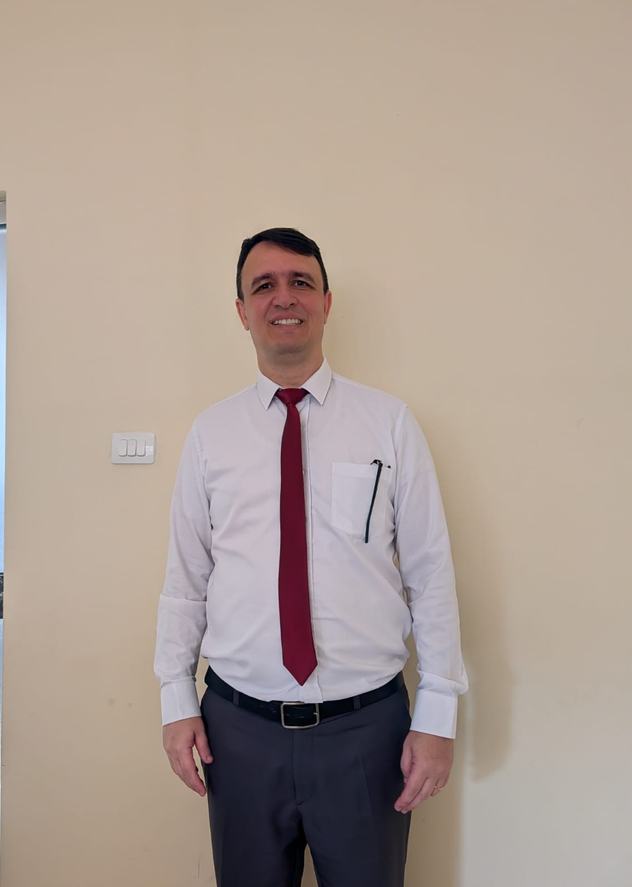

Everson da Silva | WDD 130

Olá! Meu nome é Everson da Silva e moro em Uberlândia, Minas Gerais, Brasil. Sou apaixonado por tecnologia, programação e desenvolvimento de software.

Olá! Meu nome é Everson da Silva e moro em Uberlândia, Minas Gerais, Brasil. Sou apaixonado por tecnologia, programação e desenvolvimento de software.